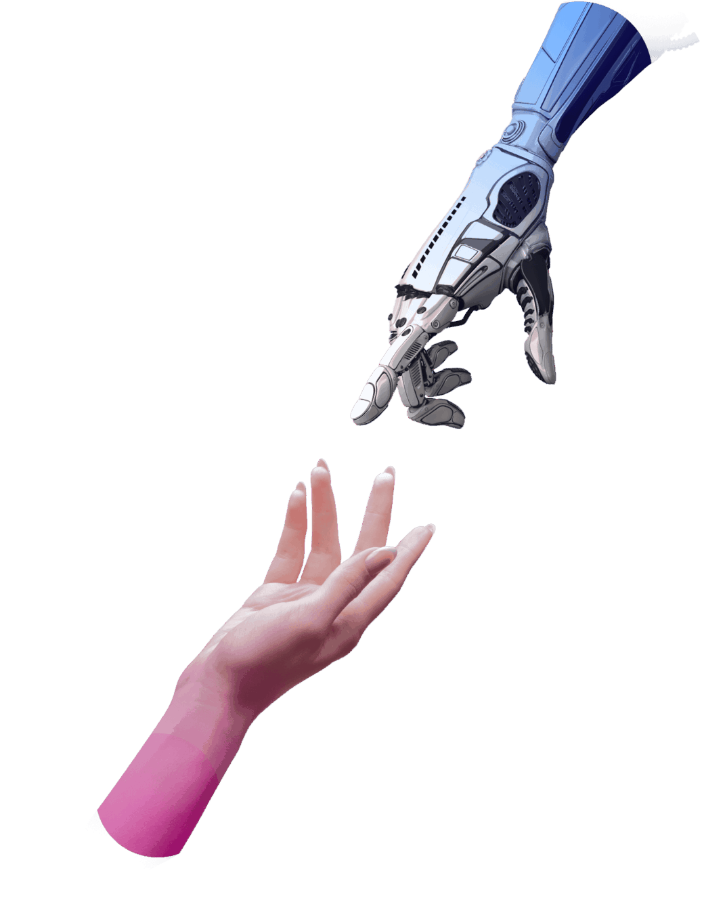
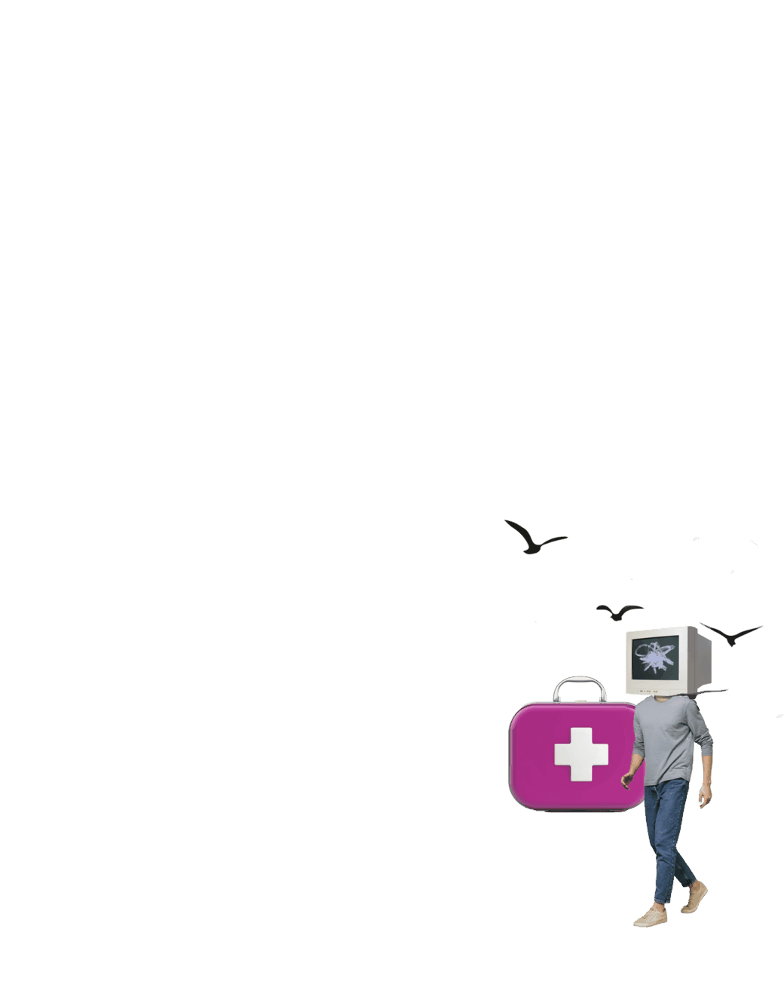
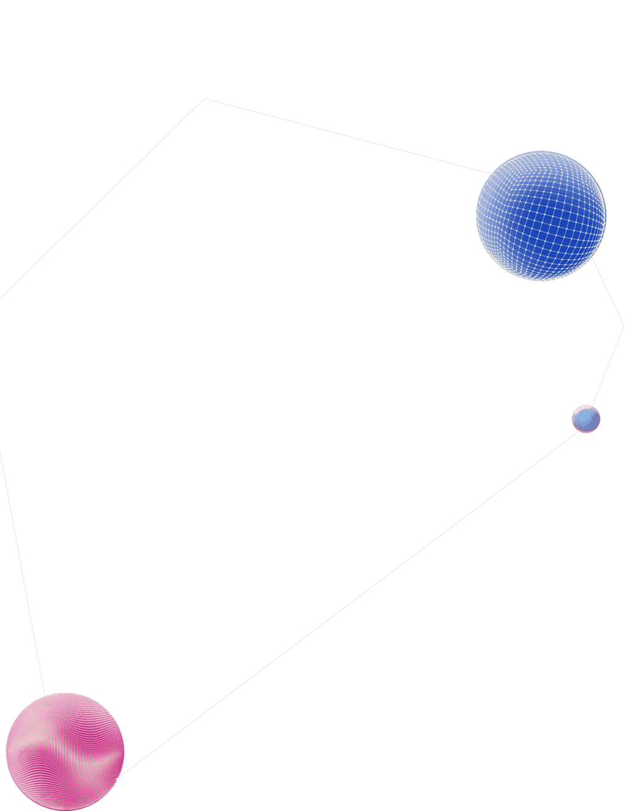
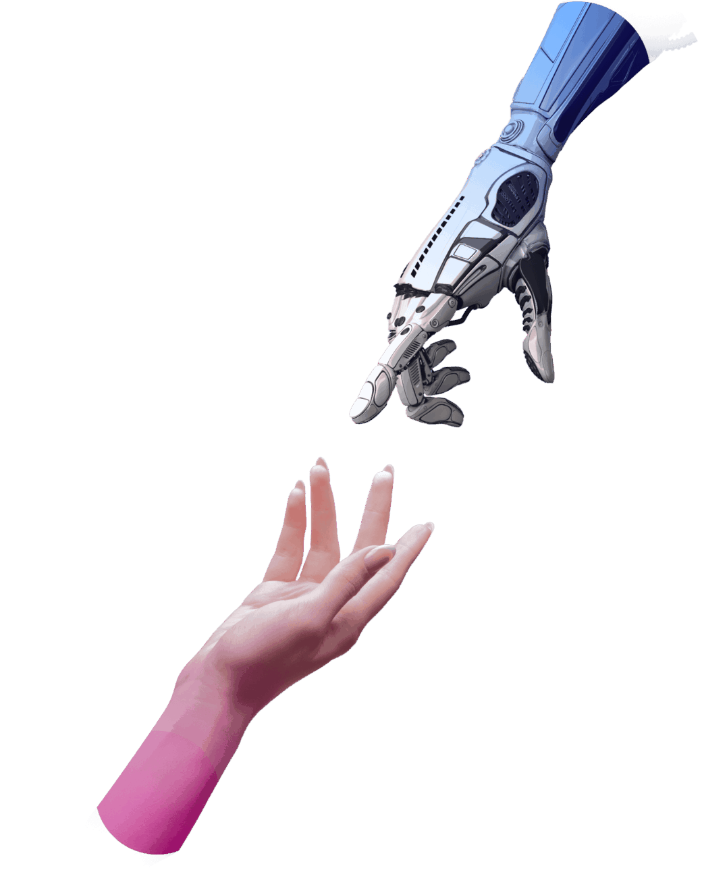
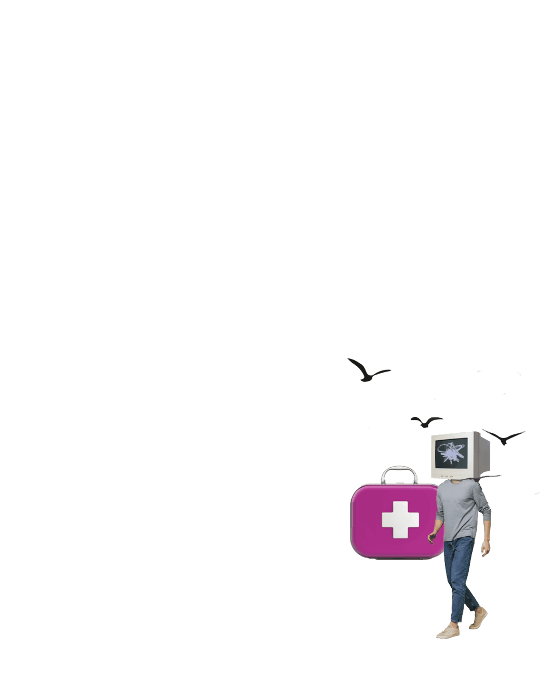
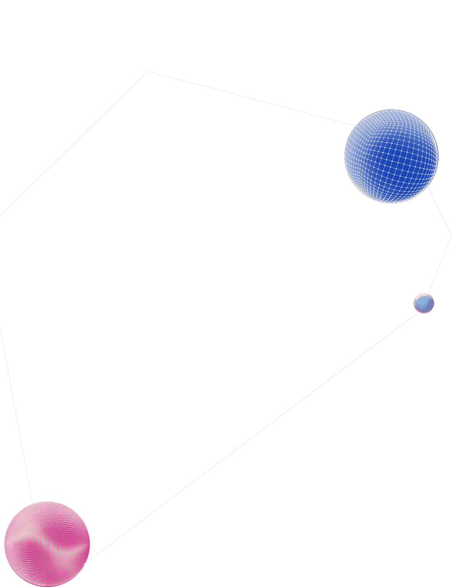
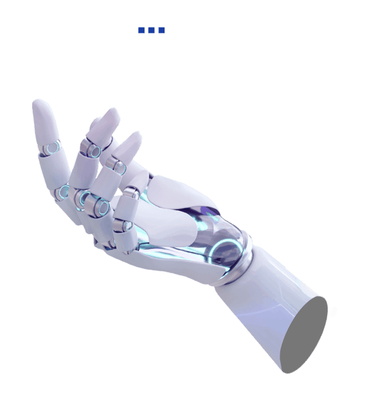
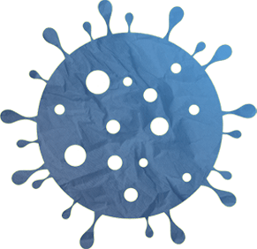
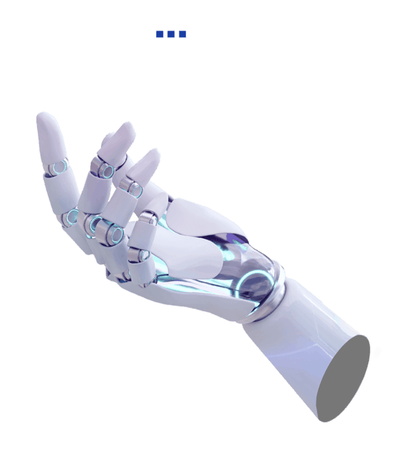
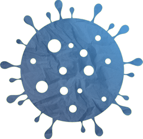

интеллектhuman / ai
Человеческий фактор играет ключевую роль в успехе любой медицинской процедуры: от простого укола до сложной операции. Причем на успех лечения влияют не только знания и опыт докторов. Немалое значение для выздоровления пациента имеют оперативность проведенных мероприятий, доброжелательная обстановка, забота и внимание со стороны медперсонала.
Над созданием атмосферы взаимного уважения между врачами и пациентами работают медицинские учреждения Москвы. В столице профессионализм врачей и всего медперсонала идет рука об руку с современными технологиями, заботой и вниманием к пациентам. Рассказываем о людях, которые создают в больницах доброжелательную атмосферу и делают все возможное для скорейшего выздоровления пациентов.
Эти люди взяли на себя все немедицинские вопросы и помогают пациентам, нуждающимся в поддержке. Важнейшая задача социальной службы в больнице – заранее позаботиться о решении тех проблем, которые могут возникнуть после выписки. Например, иногда человеку нужен особый уход и внимание. Координаторы помогают оформить надомное или стационарное социальное обслуживание еще до возвращения пациента домой. Социальный работник на дому возьмет на себя уход, домашние дела, поможет оформить инвалидность, получить средства реабилитации.
Чтобы получить поддержку, пациенту не нужно заполнять какие-либо документы или предоставлять подтверждения. Благодаря слаженной работе врачей и социальных координаторов нуждающихся в помощи выявляют еще на этапе госпитализации: помогут найти родственников, восстановить утерянные документы и решить многие другие вопросы.

Мир сильно изменился по сравнению с тем, каким он был всего десять лет назад, и нигде это так не заметно, как в здравоохранении. Внедрение технологий и цифровизации резко изменило ситуацию для всех пациентов и врачей.
В Москве создана уникальная экосистема – единая цифровая платформа здравоохранения. Она объединяет все звенья оказания медицинской помощи – поликлиники, стационары, «скорую» – и позволяет вести пациента на всех этапах: от постановки диагноза и лечения до последующего наблюдения. Это позволяет внедрять инновационные сервисы – телемедицину, чат-боты, ИИ и другие цифровые сервисы, – чтобы делать оказание медицинской помощи более персонифицированным.

 
Голосовой ввод данных позволяет врачу надиктовывать описание исследования вместо ввода данных вручную, не отвлекаясь от проведения операции или обследования, уделять больше времени пациенту, а не рутине. Во время осмотра врач с помощью специального микрофона надиктовывает информацию, которая моментально расшифровывается и переносится в открытый протокол медицинской информационной системы.
Решение экономит более 20% времени врачей на заполнение документации. Голосовой помощник постоянно дообучается: пополняет словарь сложными и редкими медицинскими терминами, подстраивается под особенности произношения разных врачей, охватывает новые диагностические и лечебные задачи. Благодаря этому точность распознавания речи достигла 98%.
На самом деле, победитель в гонке людей и искусственного интеллекта только один – человек, который сумел «помирить» людей и искусственный интеллект, поставив их достижения на службу пациентов, жизнь которых за счет всего этого вышла на новый уровень.
По сути, московские медицинские учреждения прошли через революционные преобразования. Опираясь на весь накопленный врачебный опыт и научный потенциал, в них создали современную, дружелюбную и логичную инфраструктуру.
Большое внимание в медицине Москвы уделяется созданию атмосферы взаимного уважения между врачами и пациентами, доброжелательной обстановки. Оказание помощи характеризуется не только высоким профессионализмом медиков и самыми широкими возможностями современного оснащения, но и высоким уровнем эмпатии специалистов.
Все аргументы, которые это доказывают, представлены на Московском урбанфоруме в Гостином дворе.
Сегодня социальная сфера столицы одна из самых инновационных в мире. В городе стараются не просто строить новые детские сады или больницы, внедрять уникальные цифровые технологии и закупать передовое оборудование, а менять культуру общения и отношение в каждом из столичных учреждений.
Всего в Гостином дворе размещено 12 тематических интерактивных зон, посвященных инновационным разработкам и новейшим технологиям в сфере здравоохранения, образования и социальной защиты. Например, можно посетить Музей вредных привычек, Офис управления карьерой, а также познакомиться с метанавыками человека будущего. У гостей форума есть возможность оказаться в организме человека, который является заложником вредных привычек. А симулятор старости с помощью специального костюма с VR-очками позволит буквально перенестись в тело пожилого человека и попробовать выполнить самые обычные действия.
Буквально на один день, в красивую дату 23 августа 2023 года, Гостиный двор превратится в настоящий дворец бракосочетания, причем помогать регистраторам будут звезды театра, кино, певцы и шоумены. Заявку на необычную церемонию может подать любая пара – через Госуслуги. Количество приглашенных гостей – неограниченное.